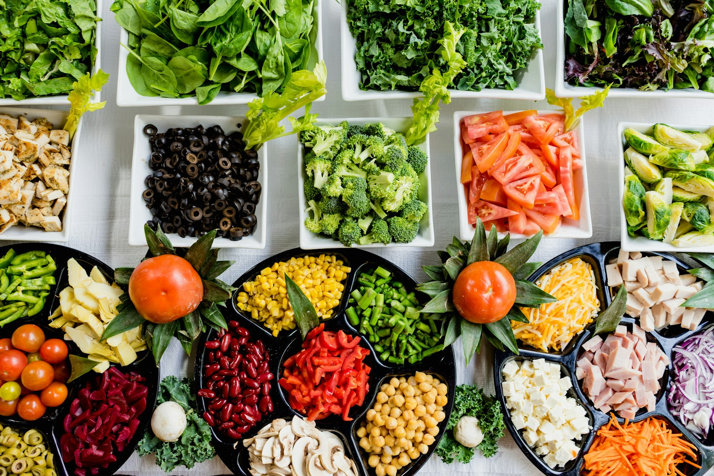

Where good food &
good people meet.
Dubai’s independent guide to eating plant-based, finding your people and starting wherever you are.


Eat well around Dubai
Local places selected for more than one sad salad.

26September
Saturday
Saturday
Lunch tastes better with company.
Our next community table is at Dobro Top Vegan. Come alone or bring a friend. Vegan or simply curious, you are welcome.

You do not need to be perfect to begin.
A practical Dubai guide for eating out, shopping, answering awkward questions and building habits that actually fit your life.
Read the starter guideOne meal can be a beginning.
Put your business on the community map.
Apply for a verified listing or propose an event collaboration.
Start an application